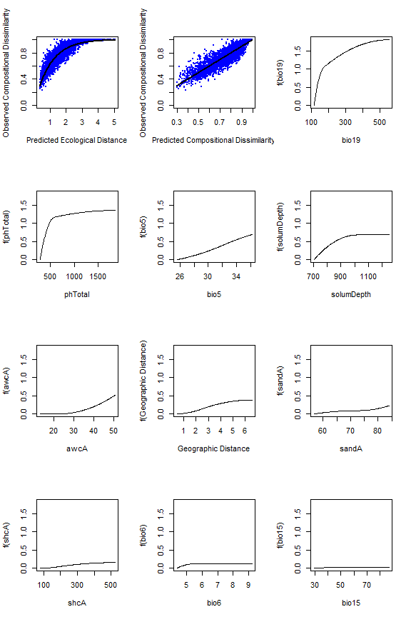
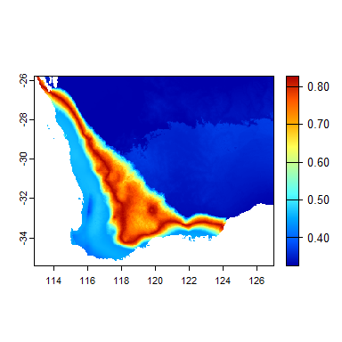

The gdm package provides functions to fit, plot, summarize, and apply Generalized Dissimilarity Models.
Installation
The gdm package is available on CRAN, development versions are available on GitHub.
- Install from CRAN:
install.packages("gdm")- Install latest development version from GitHub (requires devtools package):
if (!require("devtools")) {
install.packages("devtools")
}
devtools::install_github("fitzLab-AL/gdm")Package Citation
Fitzpatrick MC, Mokany K, Manion G, Nieto-Lugilde D, Ferrier S. (2021) gdm: Generalized Dissimilarity Modeling. R package version 1.5.
Getting Started
GDM has been used in many published studies. In addition to working through the examples here and those throughout the package documentation, we recommend reading these publications for background information:
Ferrier S, Manion G, Elith J, Richardson, K (2007) Using generalized dissimilarity modelling to analyse and predict patterns of beta diversity in regional biodiversity assessment. Diversity & Distributions 13: 252-264.
Mokany K, Ware C, Woolley SNC, Ferrier S, Fitzpatrick MC (in revision) A working guide to generalized dissimilarity modelling.
Introduction
The R package gdm implements Generalized Dissimilarity Modeling
@ferrier2007
to analyze and map spatial patterns of biodiversity. GDM models biological variation as a function of environment and geography using distance matrices – specifically by relating biological dissimilarity between sites to how much sites differ in their environmental conditions (environmental distance) and how isolated they are from one another (geographical distance). Here we demonstrate how to fit, apply, and interpret GDM in the context of analyzing and mapping species-level patterns. GDM also can be used to model other biological levels of organization, notably genetic
@fitzpatrick2015
, phylogenetic
@rosauer2014
, or function/traits
@thomassen2010
), and the approaches for doing so are largely identical to the species-level case with the exception of using a different biological dissimilarity metric depending on the type of response variable.
Preparing the data for GDM: The site-pair table.
The initial step in fitting a generalized dissimilarity model is to combine the biological and environmental data into “site-pair” table format using the formatsitepair function.
GDM can use several data formats as input. Most common are site-by-species tables (sites in rows, species across columns) for the response and site-by-environment tables (sites in rows, predictors across columns) as the predictors, though distance matrices and rasters also are accommodated as demonstrated below.
The gdm package comes with two example biological data sets and two example environmental data sets in a number of formats. Example data include: - southwest: A data frame that contains x-y coordinates, 10 columns of predictors (five soil and five bioclimatic variables), and occurrence data for 900+ species of plants from southwest Australia (representing a subset of the data used in
@fitzpatrick2013
). Note that the format of the southwest table is an x-y species list (i.e., bioFormat = 2, see below) where there is one row per species record rather than per site. These biological data are similar to what would be obtained from online databases such as
GBIF
https://www.gbif.org/. - gdmDissim: A pairwise biological dissimilarity matrix derived from the species data provided in southwest. gdmDissim is provided to demonstrate how to proceed when you when you want to fit GDM using an existing biological distance matrix (e.g., pairwise Fst) as the response variable (i.e., bioFormat = 3, see below). Note however that distance matrices can also be used as predictors (e.g., to model compositional variation in one group as a function of compositional variation in another group
@jones2013
). - swBioclims: a raster stack of the five bioclimatic predictors provided in the southwest data.
Note that for all input data the rows and their order must match in the biological and environmental data frames and must not include NAs. This is best accomplished by making sure your tables have a column with a unique identifier for each site and that the order of these IDs are the same across all tables.
To build a site-pair table, we need individual tables for the biological and environmental data, so we first index the southwest table to create a table for the species data and a second for the environmental data:
library(gdm)
# have a look at the southwest data set
str(southwest)
#> 'data.frame': 29364 obs. of 14 variables:
#> $ species : Factor w/ 974 levels "spp1","spp10",..: 1 1 1 1 1 1 1 1 1 1 ...
#> $ site : int 1066 1026 1025 1026 1027 1047 1048 1066 1066 1067 ...
#> $ awcA : num 14.5 16.3 23.1 16.3 17 ...
#> $ phTotal : num 546 471 460 471 489 ...
#> $ sandA : num 71.3 68.9 71.5 68.9 74.7 ...
#> $ shcA : num 178.9 105.8 88.4 105.8 147.2 ...
#> $ solumDepth: num 875 928 892 928 952 ...
#> $ bio5 : num 31.4 33.1 32.8 33.1 33.2 ...
#> $ bio6 : num 5.06 4.85 4.82 4.85 4.59 ...
#> $ bio15 : num 40.4 48.2 53.9 48.2 44 ...
#> $ bio18 : int 0 0 43 0 0 0 0 0 0 0 ...
#> $ bio19 : num 133 140 145 140 136 ...
#> $ Lat : num -33 -32 -32 -32 -32.1 ...
#> $ Long : num 119 118 118 118 119 ...
# biological data
# get columns with xy, site ID, and species data
sppTab <- southwest[, c("species", "site", "Long", "Lat")]
# # columns 3-7 are soils variables, remainder are climate
# get columns with site ID, env. data, and xy-coordinates
envTab <- southwest[, c(2:ncol(southwest))]Because the southwest data are an x-y species list, we use bioFormat=2. Otherwise, we just need to provide the required column names to create the site-pair table. Note this will print a few warnings, but these can be ignored:
# x-y species list example
gdmTab <- formatsitepair(bioData=sppTab,
bioFormat=2, #x-y spp list
XColumn="Long",
YColumn="Lat",
sppColumn="species",
siteColumn="site",
predData=envTab)
#> [1] "Site weighting type: Equal"
#> [1] "Site-pair table created with 4371 rows (94 unique sites) and 26 columns (10 environmental variables)."#> distance weights s1.xCoord s1.yCoord s2.xCoord s2.yCoord s1.awcA
#> 132 0.4485981 1 115.057 -29.40472 115.5677 -29.46599 23.0101
#> 132.1 0.7575758 1 115.057 -29.40472 116.0789 -29.52556 23.0101
#> 132.2 0.8939394 1 115.057 -29.40472 116.5907 -29.58342 23.0101
#> s1.phTotal s1.sandA s1.shcA s1.solumDepth s1.bio5 s1.bio6 s1.bio15
#> 132 480.3266 83.99326 477.5656 1129.933 34.668 8.908 86.64
#> 132.1 480.3266 83.99326 477.5656 1129.933 34.668 8.908 86.64
#> 132.2 480.3266 83.99326 477.5656 1129.933 34.668 8.908 86.64
#> s1.bio18 s1.bio19 s2.awcA s2.phTotal s2.sandA s2.shcA s2.solumDepth
#> 132 0 267.44 22.3925 494.1225 76.6900 357.7225 1183.9025
#> 132.1 0 267.44 17.0975 415.1275 70.0175 112.4800 985.5300
#> 132.2 0 267.44 17.0300 333.4400 71.5950 165.7250 956.5425
#> s2.bio5 s2.bio6 s2.bio15 s2.bio18 s2.bio19
#> 132 35.50571 7.448572 75.37143 0 228.6572
#> 132.1 36.05000 6.605882 64.52941 0 168.8824
#> 132.2 36.18750 6.131250 58.75000 0 141.1250Each row in the resulting site-pair table contains a biological distance measure in the first column (the default is Bray-Curtis distance though any measure scaled between 0-1 is acceptable). The second column contains the weight to be assigned to each data point in model fitting (defaults to 1 if equal weighting is used, but can be customized by the user or can be scaled to site richness, see below). The remaining columns are the coordiantes and environmental values at a site (s1) and those at a second site (s2) making up a site pair. Subsequent rows repeat this pattern until all possible site pairs are represented and such that pairwise distances between all sites can be calculated and used as predictors. While the site-pair table format can produce extremely large data frames and contain numerous repeat values, it also allows great flexibility. Most notably, individual site pairs easily can be excluded from model fitting.
A properly formatted site-pair table will have at least six columns (distance, weights, s1.xCoord, s1.yCoord, s2.xCoord, s2.yCoord) and possibly more depending upon how many predictor variables are included. See ?formatsitepair and ?gdm for more details.
What if you already have a biological distance matrix because you are working with, say, genetic data? In that case, it is simple as changing the bioFormat argument and also making sure the rows in your biological and environmental tables are in the same order. Let’s have a quick look at gdmDissim, the pairwise biological distance matrix:
# Biological distance matrix example
dim(gdmDissim)
#> [1] 94 94
gdmDissim[1:5, 1:5]
#> V1 V2 V3 V4 V5
#> 1 0.0000000 0.8181818 1.0000000 0.5000000 0.7500000
#> 2 0.8181818 0.0000000 0.9000000 0.7777778 0.6551724
#> 3 1.0000000 0.9000000 0.0000000 1.0000000 0.5757576
#> 4 0.5000000 0.7777778 1.0000000 0.0000000 0.9090909
#> 5 0.7500000 0.6551724 0.5757576 0.9090909 0.0000000We first need to bind a site ID column to gdmDissim. We already know the sites are in the correct order, so we do not check here, but you should confirm for your data.
# get the site column from sppTab
site <- unique(sppTab$site)
# bind to gdmDissim
gdmDissim <- cbind(site, gdmDissim)
gdmDissim[1:5, 1:5]
#> site V1 V2 V3 V4
#> 1 1066 0.0000000 0.8181818 1.0000000 0.5000000
#> 2 1026 0.8181818 0.0000000 0.9000000 0.7777778
#> 3 1025 1.0000000 0.9000000 0.0000000 1.0000000
#> 4 1027 0.5000000 0.7777778 1.0000000 0.0000000
#> 5 1047 0.7500000 0.6551724 0.5757576 0.9090909Now we are ready to use formatsitepair:
gdmTab.dis <- formatsitepair(bioData=gdmDissim,
bioFormat=3, #diss matrix
XColumn="Long",
YColumn="Lat",
predData=envTab,
siteColumn="site")
#> [1] "Site weighting type: Equal"
#> [1] "Site-pair table created with 4371 rows (94 unique sites) and 26 columns (10 environmental variables)."#> distance weights s1.xCoord s1.yCoord s2.xCoord s2.yCoord s1.awcA
#> 132 0.4485981 1 115.057 -29.40472 115.5677 -29.46599 23.0101
#> 132.1 0.7575758 1 115.057 -29.40472 116.0789 -29.52556 23.0101
#> 132.2 0.8939394 1 115.057 -29.40472 116.5907 -29.58342 23.0101
#> s1.phTotal s1.sandA s1.shcA s1.solumDepth s1.bio5 s1.bio6 s1.bio15
#> 132 480.3266 83.99326 477.5656 1129.933 34.668 8.908 86.64
#> 132.1 480.3266 83.99326 477.5656 1129.933 34.668 8.908 86.64
#> 132.2 480.3266 83.99326 477.5656 1129.933 34.668 8.908 86.64
#> s1.bio18 s1.bio19 s2.awcA s2.phTotal s2.sandA s2.shcA s2.solumDepth
#> 132 0 267.44 22.3925 494.1225 76.6900 357.7225 1183.9025
#> 132.1 0 267.44 17.0975 415.1275 70.0175 112.4800 985.5300
#> 132.2 0 267.44 17.0300 333.4400 71.5950 165.7250 956.5425
#> s2.bio5 s2.bio6 s2.bio15 s2.bio18 s2.bio19
#> 132 35.50571 7.448572 75.37143 0 228.6572
#> 132.1 36.05000 6.605882 64.52941 0 168.8824
#> 132.2 36.18750 6.131250 58.75000 0 141.1250In addition to starting with tablular data, environmental data can be extracted directly from rasters, assuming the x-y coordinates of sites are provided in either a site-species table (bioFormat=1) or as a x-y species list (bioFormat=2).
# environmental raster data for sw oz
swBioclims <- raster::stack(system.file("./extdata/swBioclims.grd", package="gdm"))
gdmTab.rast <- formatsitepair(bioData=sppTab,
bioFormat=2, # x-y spp list
XColumn="Long",
YColumn="Lat",
sppColumn="species",
siteColumn="site",
predData=swBioclims) #raster stack
#> [1] "Site weighting type: Equal"
#> [1] "Site-pair table created with 4371 rows (94 unique sites) and 16 columns (5 environmental variables)."Because some sites might not overlap with the rasters, we should check for and remove NA values from teh site-pair table:
Note that the formatsitepair function assumes that the coordinates of the sites are the same coordinate system as the rasters and, at present, no checking is performed to ensure this is the case. Note also that if your site coordinates are longitude-latitude that the calculation of geographic distances between sites will have errors, the size of which will depend on the geographic extent and location of your study region. We hope to deal with this in a later release, but for now you can avoid these problems by using a projected coordinate system (e.g., equidistant).
Dealing with biases associated with presence-only data
The ideal biological data for fitting a GDM are occurrence records (presence-absence or abundance) from a network of sites where all species (from one or more taxonomic groups) have been intensively sampled such that compositional dissimilarity can be reliably estimated between sites. However most species data are collected as part of ad hoc surveys and are presence-only. Under these circumstances, there is no systematic surveying and no sites per se, but rather grid cells with some number of occurrence records depending on the number of species observed, with many grid cells having none, a few, or even a single species record. When these data are used to calculate compositional dissimilarity, erroneously high values will result, which will bias the model.
The formatsitepair function provides a few options for dealing with this potential bias, including (i) weighting sites relative to the number of species observed (weightType="richness"), (ii) removing sites with few species (e.g., speciesFilter=10) or (iii) both. Decisions regarding which approach to use will depend on the nature of the data and study system. See Ferrier et al. (2007) for further discussion.
# weight by site richness using weightType="richness"
gdmTab.rw <- formatsitepair(bioData=sppTab,
bioFormat=2,
XColumn="Long",
YColumn="Lat",
sppColumn="species",
siteColumn="site",
predData=envTab,
weightType="richness")
#> [1] "Site weighting type: Richness"
#> [1] "Site-pair table created with 4371 rows (94 unique sites) and 26 columns (10 environmental variables)."
# weights based on richness (number of species records)
gdmTab.rw[1:5, 1:5]
#> distance weights s1.xCoord s1.yCoord s2.xCoord
#> 132 0.4485981 0.2449866 115.057 -29.40472 115.5677
#> 132.1 0.7575758 0.1916207 115.057 -29.40472 116.0789
#> 132.2 0.8939394 0.1635852 115.057 -29.40472 116.5907
#> 132.3 0.9178082 0.1858930 115.057 -29.40472 117.1029
#> 132.4 0.9787234 0.1337957 115.057 -29.40472 117.6156
# remove sites with < 10 species records using
# sppFilter = 10
gdmTab.sf <- formatsitepair(bioData=sppTab,
bioFormat=2,
XColumn="Long",
YColumn="Lat",
sppColumn="species",
siteColumn="site",
predData=envTab,
sppFilter=10)
#> [1] "Site weighting type: Equal"
#> [1] "Site-pair table created with 4095 rows (91 unique sites) and 26 columns (10 environmental variables)."GDM fitting
GDM is a nonlinear extension of permutational matrix regression that uses flexible splines and generalized linear modeling (GLM) to accommodate two types of nonlinearity common in ecological datasets: (1) variation in the rate of compositional turnover (non-stationarity) along environmental gradients, and (2) the curvilinear relationship between biological distance and environmental and geographical distance.
The function gdm fits generalized dissimilarity models and is simple to use once the biological and predictor data have been formatted to a site-pair table. In addition to specifying whether or not the model should be fit with geographical distance as a predictor variable, the user can also specify (i) the number of I-spline basis functions (the default is three, with larger values producing more complex splines) and
(ii) the locations of “knots” along the splines (defaults to 0 (minimum), 50 (median), and 100 (maximum) quantiles when three I-spline basis functions are used). The effects (and significance) of altering the number of splines and knot locations has not been systematically explored.
Here we fit GDM with geo=T and default settings for all other parameters.
gdm.1 <- gdm(data=gdmTab, geo=TRUE)The summary function provides an overview of the model, including deviance explained, the values of the coefficients for the I-spline for each predictor variable, and the sum of the I-spline coefficients for each predictor (an indicator of predictor importance, the summary prints predictors in order of the sum of the coefficients). Variables with all coefficients=0 have no relationship with the biological pattern.
summary(gdm.1)
#> [1]
#> [1]
#> [1] GDM Modelling Summary
#> [1] Creation Date: Wed Nov 17 15:11:09 2021
#> [1]
#> [1] Name: gdm.1
#> [1]
#> [1] Data: gdmTab
#> [1]
#> [1] Samples: 4371
#> [1]
#> [1] Geographical distance used in model fitting? TRUE
#> [1]
#> [1] NULL Deviance: 651.914
#> [1] GDM Deviance: 129.025
#> [1] Percent Deviance Explained: 80.208
#> [1]
#> [1] Intercept: 0.277
#> [1]
#> [1] PREDICTOR ORDER BY SUM OF I-SPLINE COEFFICIENTS:
#> [1]
#> [1] Predictor 1: bio19
#> [1] Splines: 3
#> [1] Min Knot: 114.394
#> [1] 50% Knot: 172.416
#> [1] Max Knot: 554.771
#> [1] Sum of coefficients for bio19: 1.809
#> [1]
#> [1] Predictor 2: phTotal
#> [1] Splines: 3
#> [1] Min Knot: 277.978
#> [1] 50% Knot: 584.609
#> [1] Max Knot: 1860.37
#> [1] Sum of coefficients for phTotal: 1.357
#> [1]
#> [1] Predictor 3: bio5
#> [1] Splines: 3
#> [1] Min Knot: 25.571
#> [1] 50% Knot: 32.16
#> [1] Max Knot: 36.188
#> [1] Sum of coefficients for bio5: 0.694
#> [1]
#> [1] Predictor 4: solumDepth
#> [1] Splines: 3
#> [1] Min Knot: 705.02
#> [1] 50% Knot: 1017.628
#> [1] Max Knot: 1247.705
#> [1] Sum of coefficients for solumDepth: 0.682
#> [1]
#> [1] Predictor 5: awcA
#> [1] Splines: 3
#> [1] Min Knot: 12.975
#> [1] 50% Knot: 22.186
#> [1] Max Knot: 50.7
#> [1] Sum of coefficients for awcA: 0.523
#> [1]
#> [1] Predictor 6: Geographic
#> [1] Splines: 3
#> [1] Min Knot: 0.452
#> [1] 50% Knot: 2.46
#> [1] Max Knot: 6.532
#> [1] Sum of coefficients for Geographic: 0.386
#> [1]
#> [1] Predictor 7: sandA
#> [1] Splines: 3
#> [1] Min Knot: 56.697
#> [1] 50% Knot: 72.951
#> [1] Max Knot: 83.993
#> [1] Sum of coefficients for sandA: 0.231
#> [1]
#> [1] Predictor 8: shcA
#> [1] Splines: 3
#> [1] Min Knot: 78.762
#> [1] 50% Knot: 179.351
#> [1] Max Knot: 521.985
#> [1] Sum of coefficients for shcA: 0.156
#> [1]
#> [1] Predictor 9: bio6
#> [1] Splines: 3
#> [1] Min Knot: 4.373
#> [1] 50% Knot: 5.509
#> [1] Max Knot: 9.224
#> [1] Sum of coefficients for bio6: 0.121
#> [1]
#> [1] Predictor 10: bio15
#> [1] Splines: 3
#> [1] Min Knot: 29.167
#> [1] 50% Knot: 55.008
#> [1] Max Knot: 87.143
#> [1] Sum of coefficients for bio15: 0.027
#> [1]
#> [1] Predictor 11: bio18
#> [1] Splines: 3
#> [1] Min Knot: 0
#> [1] 50% Knot: 0
#> [1] Max Knot: 52
#> [1] Sum of coefficients for bio18: 0
#> [1]GDM plots
The fitted splines represent one of the most informative outputs from gdm, which also can be used to transform and map environmental variables such that they best represent biological patterns. The fitted model and I-splines can be viewed using the plot function, which produces a multi-panel plot that includes: (i) the fitted relationship between predicted ecological distance and observed compositional dissimilarity; (ii) predicted versus observed biological distance, and
(iii) each I-spline with at least one non-zero coefficient, plotted in order by sum of the I-spline coefficients (in the provided example bio18 is not plotted because all three coefficients equaled zero and so had no relationship with the response).
The maximum height of each spline indicates the magnitude of total biological change along that gradient and thereby corresponds to the relative importance of that predictor in contributing to biological turnover while holding all other variables constant (i.e., is a partial ecological distance). The spline’s shape indicates how the rate of biological change varies with position along that gradient. Thus, the splines provide insight into the total magnitude of biological change as a function of each gradient and where along each gradient those changes are most pronounced. In this example, compositional turnover is greatest along gradients of bio19 (winter precipitation) and phTotal (soil phosphorus) and most rapid near the low ends of these gradients.

To allow easy customization of I-spline plots, the isplineExtract function will extract the plotted values for each I-spline.
gdm.1.splineDat <- isplineExtract(gdm.1)
str(gdm.1.splineDat)
#> List of 2
#> $ x: num [1:200, 1:11] 0.452 0.483 0.513 0.544 0.574 ...
#> ..- attr(*, "dimnames")=List of 2
#> .. ..$ : NULL
#> .. ..$ : chr [1:11] "Geographic" "awcA" "phTotal" "sandA" ...
#> $ y: num [1:200, 1:11] 0 0.00045 0.00095 0.0015 0.0021 ...
#> ..- attr(*, "dimnames")=List of 2
#> .. ..$ : NULL
#> .. ..$ : chr [1:11] "Geographic" "awcA" "phTotal" "sandA" ...
plot(gdm.1.splineDat$x[,"bio19"],
gdm.1.splineDat$y[,"bio19"],
lwd=3,
type="l",
xlab="Winter precipitation (mm)",
ylab="Partial ecological distance")
GDM predictions
The I-splines provide an indication of how species composition (or any other fitted biological response variable) changes along each environmental gradient. Beyond these insights, a fitted model also can be used to (i) predict biological dissimilarity between site pairs in space or between times using the predict function and (ii) transform the predictor variables from their arbitrary environmental scales to a common biological importance scale using the gdm.transform function.
The following examples show predictions between site pairs in space and locations through time, and transformation of both tabular and raster data. For the raster example, the transformed layers are used to map spatial patterns of biodiversity.
Using a fitted GDM to predict biological dissimilarity between sites
The predict function requires a site-pair table in the same format as that used to fit the model. For demonstration purposes, we use the same table as that was used to fit the model, though predictions to new sites (or times) can be made as well assuming the same set of environmental/spatial predictors are available at those locations (or times).
gdm.1.pred <- predict(object=gdm.1, data=gdmTab)
head(gdm.1.pred)
#> [1] 0.4720423 0.7133571 0.8710175 0.8534788 0.9777208 0.3996694
plot(gdmTab$distance,
gdm.1.pred,
xlab="Observed dissimilarity",
ylab="Predicted dissimilarity",
xlim=c(0,1),
ylim=c(0,1),
pch=20,
col=rgb(0,0,1,0.5))
lines(c(-1,2), c(-1,2))
Predicting biological change through time
The predict function can be used to make predictions through time, for example, under climate change scenarios to estimate the magnitude of expected change in biological composition in response to environmental change
@fitzpatrick2011
. In this case, rasters must be provided for two time periods of interest.
First we fit a new model using only the climate variables and then create some fake future climate rasters to use as example data.
# fit a new gdm using a table with climate data only (to match rasters)
gdm.rast <- gdm(gdmTab.rast, geo=T)
# make some fake climate change data
futRasts <- swBioclims
##reduce winter precipitation by 25% & increase temps
futRasts[[3]] <- futRasts[[3]]*0.75
futRasts[[4]] <- futRasts[[4]]+2
futRasts[[5]] <- futRasts[[5]]+3We again use the predict function, but with time=TRUE and provide the current and future climate raster stacks. Th resulting map shows the expected magnitude of change in vegetation composition, which can be interpreted as a biologically-scaled metric of climate stress.
timePred <- predict(gdm.rast, swBioclims, time=T, predRasts=futRasts)
raster::plot(timePred, col=rgb.tables(1000))
Transforming spatial predictor layers using a fitted GDM
Using GDM to transform environmental data rescales the individual predictors to a common scale of biological importance. Spatially explicit predictor data to be transformed can be a raster stack or brick with one layer per predictor. If the model was fit with geographical distance and raster data are provided to the transform function, there is no need to provide x- or y-raster layers as these will be generated automatically. However, the character names of the x- and y-coordinates (e.g., “Long” and “Lat”) used to fit the model need to be provided.
First we fit a new model using only the climate variables.
# fit the GDM
gdmRastMod <- gdm(data=gdmTab.rast, geo=TRUE)We then use the gdm.transform function to rescale the rasters.
transRasts <- gdm.transform(model=gdmRastMod, data=swBioclims)
raster::plot(transRasts, col=rgb.tables(1000))
Visualizing multi-dimensional biological patterns
Site-pair based biological distances are difficult to visualize. However, if the transform function is applied to rasters, the resulting multi-dimensional biological space can be mapped to reveal biological patterns in geographic space. Alternatively, a biplot can be used to depict where sites fall relative to each other in biological space and therefore how sites differ in predicted biological composition. In either case, the multi-dimensional biological space can be most effectively visualized by taking a PCA to reduce dimensionality and assigning the first three components to an RGB color palette. In the resulting map, color similarity corresponds to the similarity of expected plant species composition (in other words, cells with similar colors are expected to contain similar plant communities).
# Get the data from the gdm transformed rasters as a table
rastDat <- na.omit(raster::getValues(transRasts))
# The PCA can be fit on a sample of grid cells if the rasters are large
rastDat <- raster::sampleRandom(transRasts, 50000)
# perform the principle components analysis
pcaSamp <- prcomp(rastDat)
# Predict the first three principle components for every cell in the rasters
# note the use of the 'index' argument
pcaRast <- raster::predict(transRasts, pcaSamp, index=1:3)
# scale the PCA rasters to make full use of the colour spectrum
pcaRast[[1]] <- (pcaRast[[1]]-pcaRast[[1]]@data@min) /
(pcaRast[[1]]@data@max-pcaRast[[1]]@data@min)*255
pcaRast[[2]] <- (pcaRast[[2]]-pcaRast[[2]]@data@min) /
(pcaRast[[2]]@data@max-pcaRast[[2]]@data@min)*255
pcaRast[[3]] <- (pcaRast[[3]]-pcaRast[[3]]@data@min) /
(pcaRast[[3]]@data@max-pcaRast[[3]]@data@min)*255
# Plot the three PCA rasters simultaneously, each representing a different colour
# (red, green, blue)
raster::plotRGB(pcaRast, r=1, g=2, b=3)